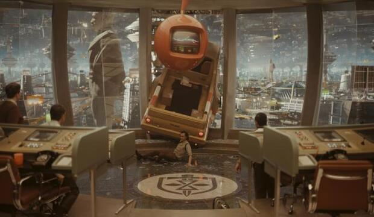
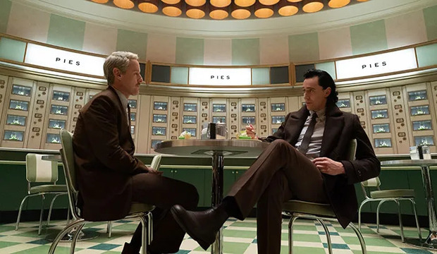

Loki is a sci-fi mystery series where the God of Mischief is captured by the **Time Variance Authority (TVA), a group that polices the timeline. To avoid being erased, Loki must help them hunt a dangerous "variant" of himself. The show explores identity and free will while officially cracking open the Marvel Multiverse.

The series is set in the Time Variance Authority (TVA), a retro-office headquarters existing outside of time. It’s a place where magic is useless, Infinity Stones are paperweights, and agents monitor the entire history of the universe. The story also visits The Void (a wasteland at the end of time) and various historical disasters across the timeline.

I love it because it’s not just a superhero show; it’s a brilliant character study about whether a "villain" can actually change. Plus, the chemistry between Loki and Mobius is perfection, the soundtrack is hauntingly beautiful, and it finally gave Loki the glorious purpose he deserved. It's smart, weird, and visually stunning!